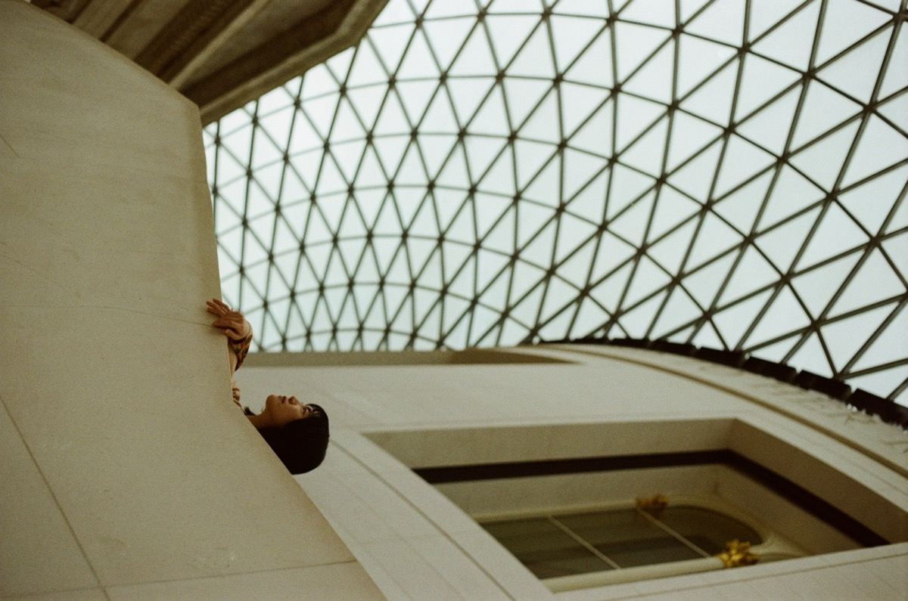
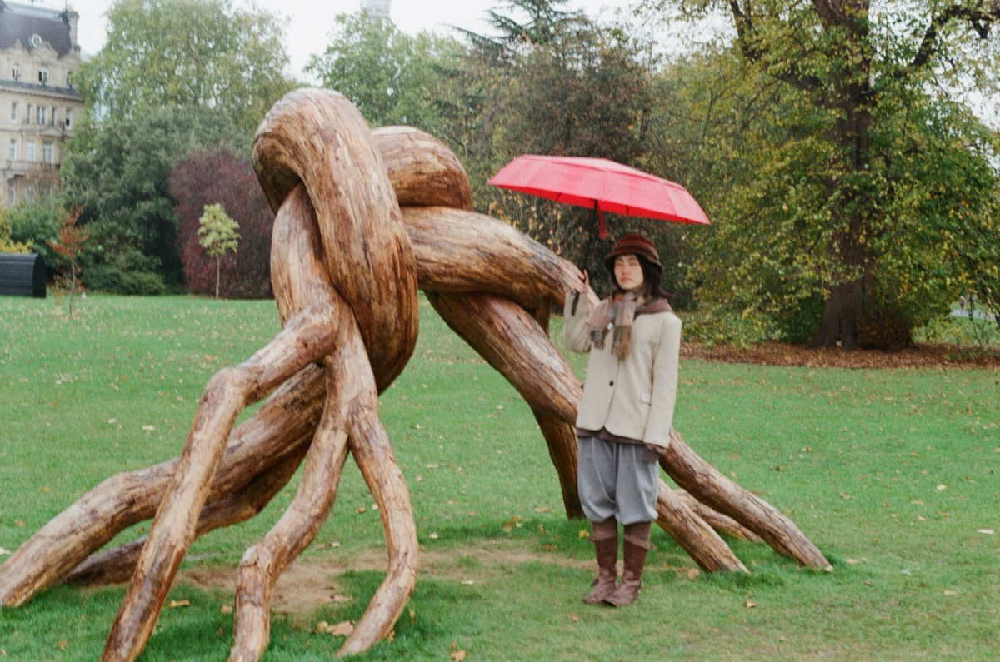
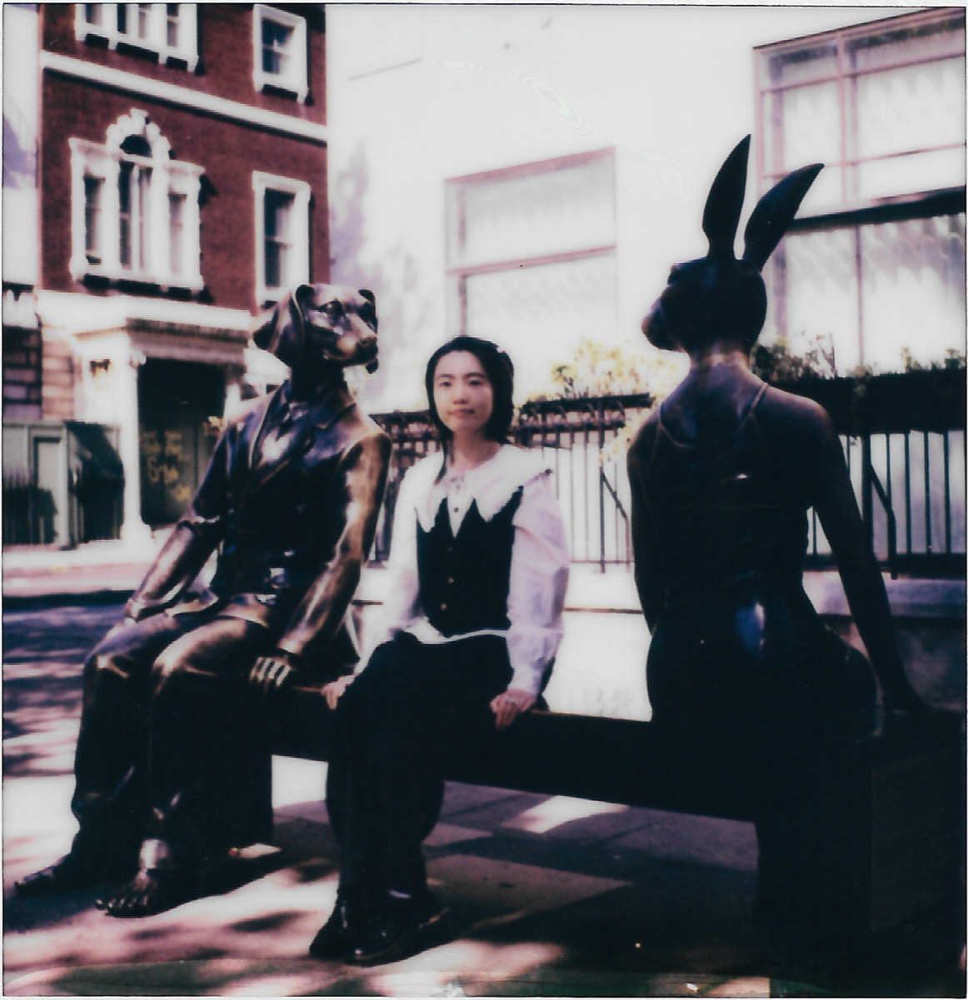
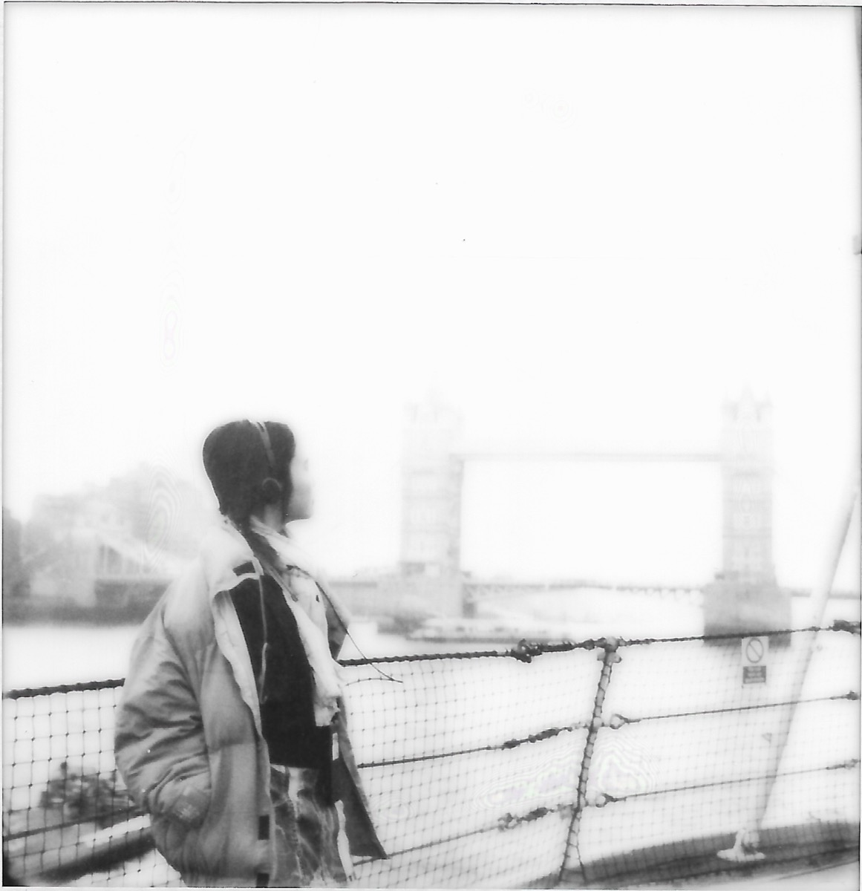
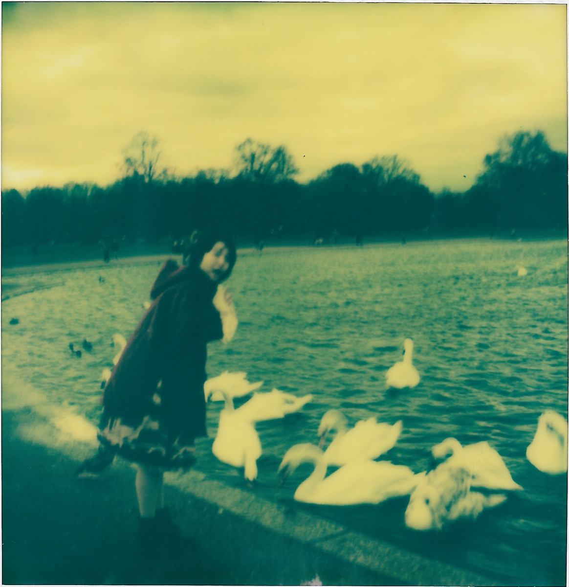
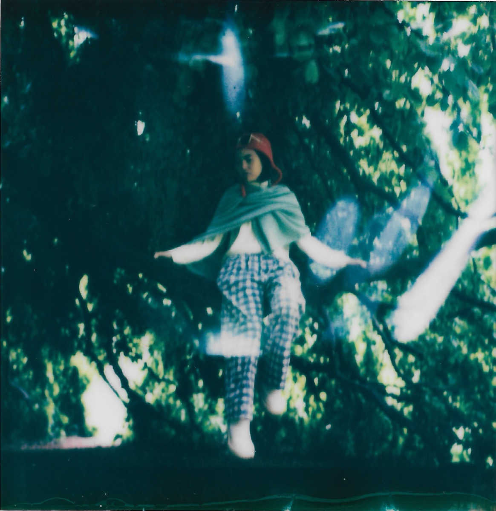
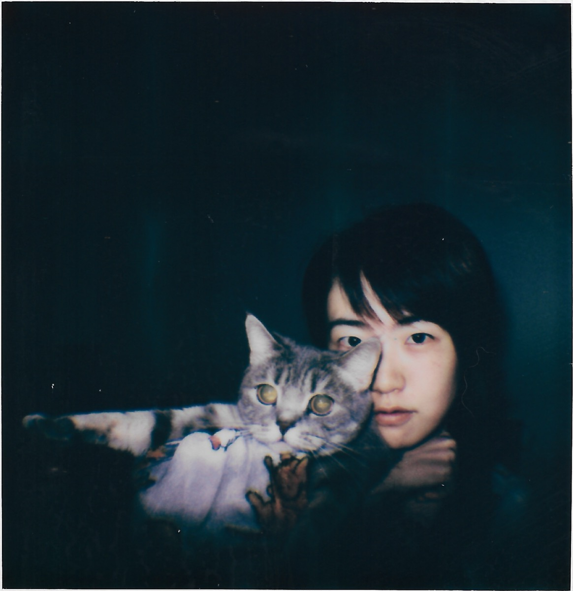
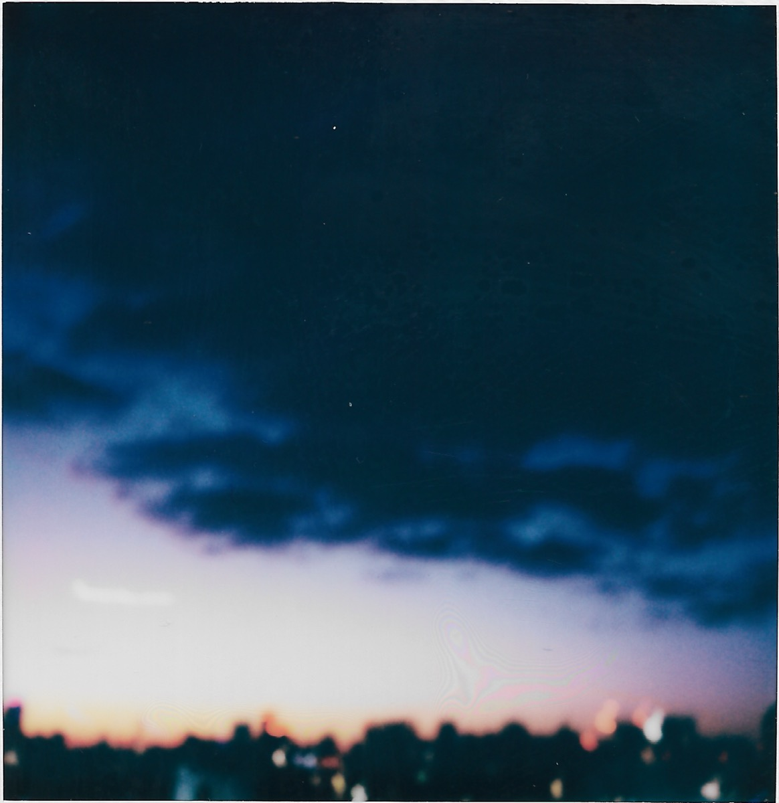

看电影的，也写写词。
Worked on festival-finalist films.
York linguistics → QMUL film. London.








胶片与拍立得，八帧，由实入虚。Film and instant work, eight frames. A small figure walking into large structures; the chemistry testifies.
选自《甲乙十六首》——一人分作两声的唱和集，甲详序，乙无题，附自撰笺注。全集 →
From a sixteen-poem cycle written in two voices by one hand.
全文备索。Full texts available on request.